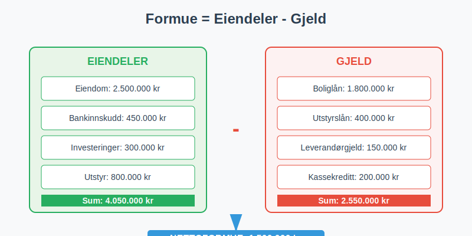
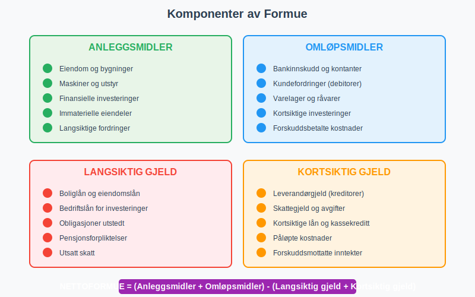
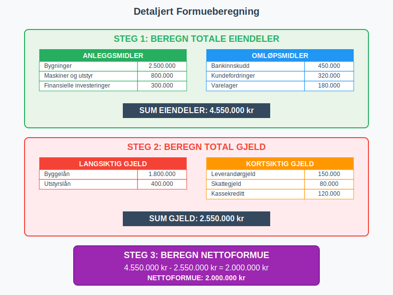
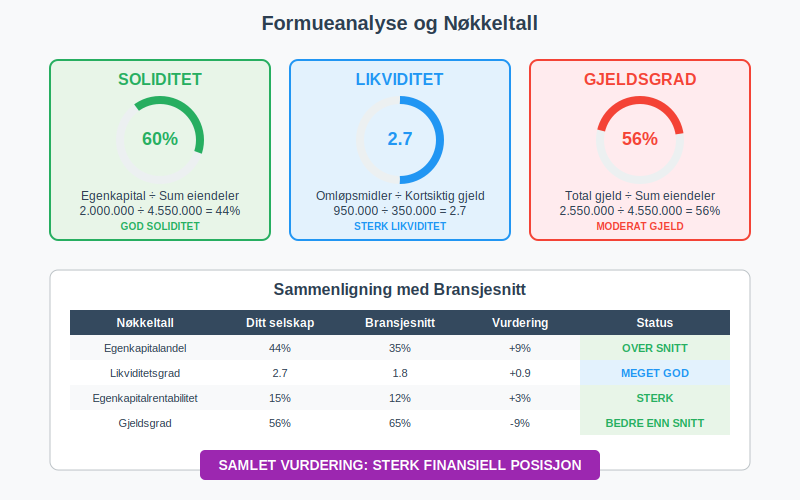
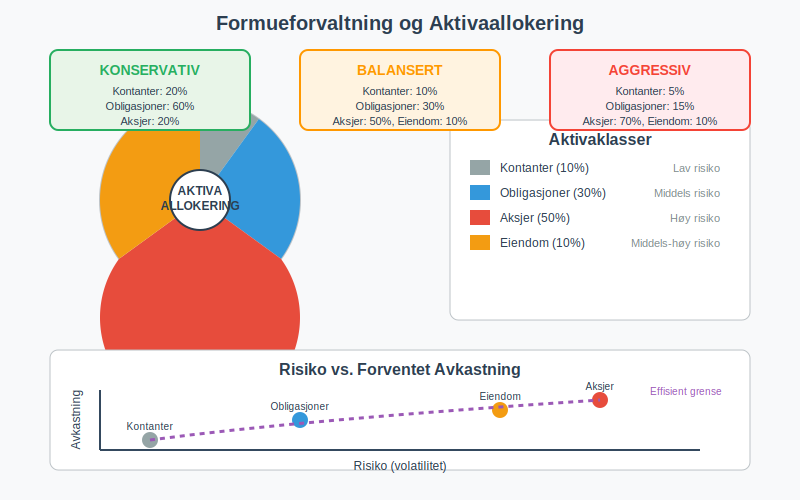
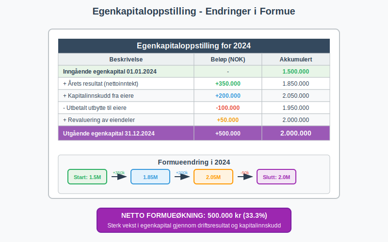

Formue er den totale nettoformuen til en person eller bedrift, beregnet som forskjellen mellom totale eiendeler og total gjeld. I regnskapssammenheng refererer formue til egenkapitalen i balansen, og representerer den reelle verdien som eiere har i virksomheten etter at all gjeld er betalt.

Hva er Formue?
Formue defineres som:
- Nettoformue = Totale eiendeler - Total gjeld
- Den økonomiske verdien som gjenstår etter at alle forpliktelser er oppfylt
- Egenkapitalen i regnskapssammenheng
- Verdiskapningen som har skjedd over tid
- Grunnlaget for økonomisk trygghet og fremtidig vekst
Formue vs. Inntekt
Det er viktig å skille mellom formue og inntekt:
| Aspekt | Formue | Inntekt |
|---|---|---|
| Definisjon | Akkumulert verdi på et tidspunkt | Penger mottatt over en periode |
| Tidsperspektiv | Øyeblikksbilde (status) | Strøm over tid (periode) |
| Måling | Balanseverdi | Driftsinntekter |
| Eksempel | Eier hus verdt 3 mill. kr | Tjener 500.000 kr per år |
Komponenter av Formue
Formue består av ulike typer eiendeler minus gjeld:

Eiendeler (Aktiva)
- Eiendom og bygninger
- Maskiner og utstyr
- Finansielle investeringer (aksjer, obligasjoner)
- Immaterielle eiendeler (patenter, varemerker)
Omløpsmidler:
- Bankinnskudd og kontanter
- Kundefordringer (debitorer)
- Varelager og råvarer
- Kortsiktige investeringer
Gjeld (Passiva)
Langsiktig gjeld:
- Boliglån og eiendomslån
- Bedriftslån for investeringer
- Obligasjoner utstedt av selskapet
- Pensjonsforpliktelser
Kortsiktig gjeld:
- Leverandørgjeld (kreditorer)
- Skattegjeld og avgifter
- Kortsiktige lån og kassekreditt
- Påløpte kostnader
Beregning av Formue
Grunnleggende Formel
Nettoformue = Totale eiendeler - Total gjeld
Detaljert Beregningseksempel
La oss se på en komplett formueberegning for en bedrift:
| Eiendeler | Beløp (NOK) |
|---|---|
| Anleggsmidler | |
| Bygninger | 2.500.000 |
| Maskiner og utstyr | 800.000 |
| Finansielle investeringer | 300.000 |
| Omløpsmidler | |
| Bankinnskudd | 450.000 |
| Kundefordringer | 320.000 |
| Varelager | 180.000 |
| Sum eiendeler | 4.550.000 |
| Gjeld | Beløp (NOK) |
|---|---|
| Langsiktig gjeld | |
| Byggelån | 1.800.000 |
| Utstyrslån | 400.000 |
| Kortsiktig gjeld | |
| Leverandørgjeld | 150.000 |
| Skattegjeld | 80.000 |
| Kassekreditt | 120.000 |
| Sum gjeld | 2.550.000 |
Beregning:
- Nettoformue = 4.550.000 - 2.550.000 = 2.000.000 NOK

Typer Formue
Privat Formue
Privatpersoners formue inkluderer:
- Bolig og fritidseiendom
- Bankinnskudd og sparekontoer
- Aksjer og fond
- Pensjonssparing og livsforsikring
- Personlige eiendeler (bil, båt, kunst)
Minus gjeld:
- Boliglån og forbrukslån
- Kredittkortgjeld
- Studielån
Bedriftsformue
Bedriftens formue (egenkapital) består av:
- Aksjekapital fra eierne
- Opptjent egenkapital (akkumulert overskudd)
- Fond og reserver
- Årets resultat
Finansiell Formue vs. Realformue
| Type | Beskrivelse | Eksempler |
|---|---|---|
| Finansiell formue | Pengekrav og finansielle instrumenter | Bankinnskudd, aksjer, obligasjoner |
| Realformue | Fysiske eiendeler med egenverdi | Eiendom, maskiner, råvarer, kunst |
Formueanalyse og Nøkkeltall
Viktige Nøkkeltall
Egenkapitalandel = (Egenkapital ÷ Sum eiendeler) × 100
Gjeldsgrad:
Gjeldsgrad = (Total gjeld ÷ Sum eiendeler) × 100
Egenkapitalrentabilitet = (Årsresultat ÷ Gjennomsnittlig egenkapital) × 100
Formueanalyse-tabell
| Nøkkeltall | Beregning | Tolkning |
|---|---|---|
| Soliditet | Egenkapital ÷ Sum eiendeler | Høyere = bedre finansiell styrke |
| Likviditet | Omløpsmidler ÷ Kortsiktig gjeld | Høyere = bedre betalingsevne |
| Gearing | Total gjeld ÷ Egenkapital | Lavere = mindre finansiell risiko |

Verdivurdering av Formue
Regnskapsmessig Verdi vs. Markedsverdi
Regnskapsmessig verdi:
- Basert på anskaffelseskost
- Justert for avskrivninger
- Konservativ tilnærming
- Følger regnskapsregler
Markedsverdi:
- Basert på dagens markedspriser
- Kan være høyere eller lavere enn bokført verdi
- Mer volatil
- Reflekterer faktisk salgspris
Verdivurderingsmetoder
For eiendom:
- Sammenlignbar salg (markedsverdi)
- Inntektsmetoden (kapitalisering av leieinntekter)
- Kostmetoden (gjenanskaffelseskost)
For aksjer og investeringer:
- Børskurs for børsnoterte selskaper
- Balansebasert verdivurdering for private selskaper
- Inntjeningsbasert verdsettelse
Formueoppbygging og -forvaltning
Strategier for Formueoppbygging
Sparing og investering:
- Systematisk sparing av overskudd
- Diversifiserte investeringer for risikospredning
- Langsiktig perspektiv for verdivekst
- Reinvestering av avkastning
Gjeldsoptimalisering:
- Redusere høyrentende gjeld først
- Utnytte skattefordeler ved fradragsberettiget gjeld
- Balansere risiko og avkastning
Formueforvaltning
Aktivaallokering:
| Aktivaklasse | Andel | Risiko | Forventet avkastning |
|---|---|---|---|
| Kontanter | 5-10% | Lav | Lav |
| Obligasjoner | 20-40% | Middels | Middels |
| Aksjer | 40-70% | Høy | Høy |
| Eiendom | 10-30% | Middels-høy | Middels-høy |

Skattemessige Aspekter
Formueskatt
I Norge ble formueskatt avskaffet i 2014, men prinsippene er fortsatt relevante:
- Skattepliktig formue var nettoformue over et bunnfradrag
- Verdsettelse til skattemessige verdier (ofte lavere enn markedsverdi)
- Fradrag for gjeld og visse eiendeler
Gevinstbeskatning
Realiserte gevinster beskattes når eiendeler selges:
- Aksjegevinst beskattes som kapitalinntekt
- Eiendomsgevinst kan ha særregler
- Tap kan fradras mot gevinster
Formue i Ulike Selskapsformer
Enkeltpersonforetak
I et enkeltpersonforetak er:
- Bedriftens formue = eierens private formue
- Ubegrenset ansvar for bedriftens gjeld
- Ingen skille mellom privat og bedrift
Aksjeselskap
I et aksjeselskap er:
- Selskapets formue skilt fra eiernes private formue
- Begrenset ansvar for aksjonærene
- Egenkapital representerer eiernes andel av formuen
Formueanalyse i Praksis
Case: Formueanalyse av Bedrift
Selskap ABC AS - Formueanalyse 2024:
| År | Eiendeler | Gjeld | Nettoformue | Endring |
|---|---|---|---|---|
| 2022 | 5.200.000 | 3.100.000 | 2.100.000 | - |
| 2023 | 5.800.000 | 3.200.000 | 2.600.000 | +23,8% |
| 2024 | 6.500.000 | 3.400.000 | 3.100.000 | +19,2% |
Analyse:
- Positiv utvikling i nettoformue over 3 år
- Eiendelsvekst på 25% (2022-2024)
- Kontrollert gjeldsvekst på kun 9,7%
- Forbedret soliditet fra 40,4% til 47,7%
Formueplanlegging
Kortsiktige mål (1-2 år):
- Øke likviditetsreserver
- Redusere kortsiktig gjeld
- Forbedre arbeidskapital
Langsiktige mål (5-10 år):
- Diversifisere investeringer
- Bygge opp pensjonsformue
- Planlegge generasjonsskifte
Formue og Finansiell Rapportering
Balanserapportering
Formue rapporteres i balansen som:
Egenkapital:
- Innskutt egenkapital (aksjekapital, overkurs)
- Opptjent egenkapital (fond, udisponert overskudd)
- Årets resultat
Endringer i Egenkapital
Egenkapitaloppstilling viser:
- Inngående balanse ved årets start
- Årets resultat (økning/reduksjon)
- Utbytte og andre utdelinger (reduksjon)
- Kapitalinnskudd (økning)
- Utgående balanse ved årets slutt

Internasjonale Perspektiver
IFRS og Formueregnskapet
Under International Financial Reporting Standards (IFRS):
- Virkelig verdi brukes for visse eiendeler
- Revaluering av anleggsmidler tillatt
- Mer markedsorientert verdsettelse
Sammenligning med Andre Land
| Land | Formueskatt | Særtrekk |
|---|---|---|
| Norge | Nei (avskaffet 2014) | Høy eiendomsbeskatning |
| Sverige | Nei (avskaffet 2007) | Ingen eiendomsskatt |
| Sveits | Ja | Varierer per kanton |
| Frankrike | Ja (over €1,3 mill.) | Kun eiendom |
Digitale Verktøy for Formueanalyse
Regnskapssystemer
Moderne ERP-systemer tilbyr:
- Automatisk formueberegning
- Sanntids balanserapporter
- Trendanalyse og prognoser
- Integrerte dashboards
Personlig Formueforvaltning
Digitale verktøy:
- Nettbank-oversikter av alle kontoer
- Investeringsapper med porteføljeanalyse
- Budsjettverktøy for formueplanlegging
- Skatteplanlegging med formueoptimalisering
Vanlige Feil og Misforståelser
Typiske Feil
Verdsettingsfeil:
- Overvurdere illikvide eiendeler
- Glemme skjult gjeld eller forpliktelser
- Ikke justere for inflasjon over tid
- Blande regnskapsmessig og markedsverdi
Analysfeil:
- Fokusere kun på absolutte tall
- Ignorere bransjebenchmarks
- Ikke vurdere fremtidig inntjeningsevne
- Overse skattemessige konsekvenser
Best Practices
For formueanalyse:
- Bruk konsistente verdsettelsesmetoder
- Oppdater verdier regelmessig
- Inkluder alle eiendeler og forpliktelser
- Dokumenter forutsetninger og metoder
Fremtidige Trender
Digitalisering av Formueforvaltning
Teknologiske utviklinger:
- Kunstig intelligens for investeringsrådgivning
- Blockchain for eiendomsregistrering
- Automatisert porteføljebalansering
- Sanntids markedsverdier
Bærekraftig Formueforvaltning
ESG-investering:
- Miljømessige kriterier
- Sosiale hensyn
- God selskapsstyring
- Langsiktig verdiskapning
Konklusjon
Formue er et grunnleggende konsept i regnskap og økonomi som representerer den reelle verdien etter at all gjeld er trukket fra. Forståelse av formue og formueanalyse er essensielt for:
- Økonomisk planlegging og beslutninger
- Investeringsvurderinger og risikostyring
- Kredittvurdering og finansiering
- Skatteplanlegging og optimalisering
- Generasjonsskifte og arveplanlegging
Ved å følge prinsippene for formueoppbygging, diversifisering og langsiktig tenkning kan både privatpersoner og bedrifter bygge solid økonomisk fundament for fremtiden.
Regelmessig formueanalyse og oppfølging av nøkkeltall sikrer at man holder oversikt over den økonomiske utviklingen og kan ta informerte beslutninger om fremtidig strategi og investeringer.